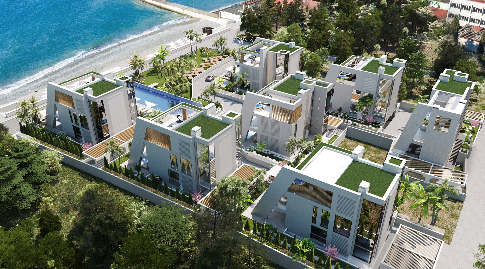
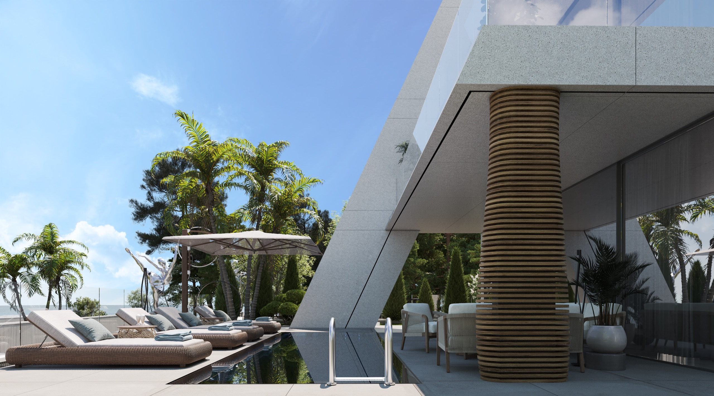
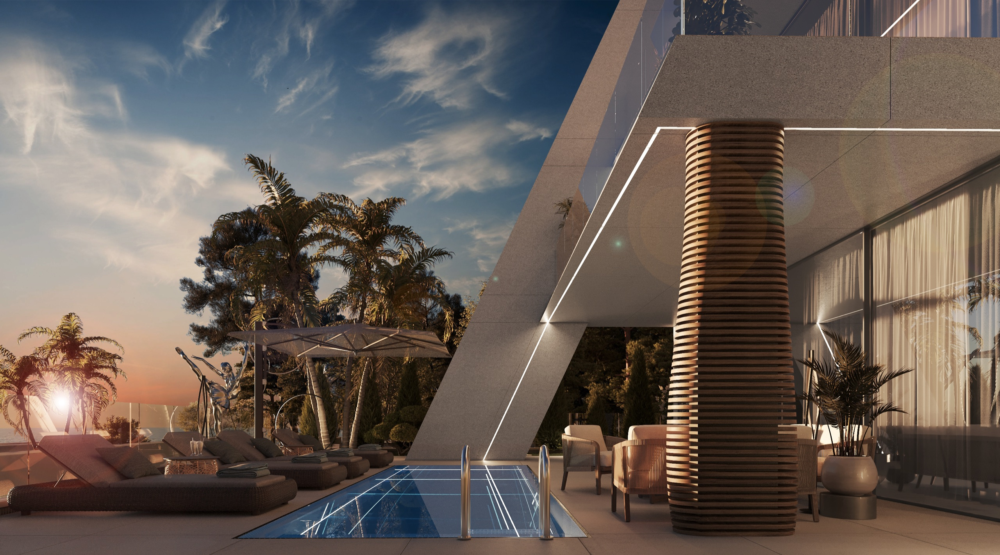

Частный посёлок у моря, снятый одним движением — место, объект, жизнь. Прокрутите: плёнка пойдёт.

Сочи, Адлерский район, переулок Хостинский. Закрытая территория со своей внутренней дорогой и бассейном посёлка.

Камень, стекло, дерево. Три надземных этажа — не выше двенадцати метров: масштаб, который не спорит с берегом.

Тот же кадр после заката: терраса, вода, тишина. Дальше — без монтажа.
Большинство домов продаются. Лучшие — остаются в семье.
RT Villas — камерный посёлок отдельных резиденций на юге Сочи. Участки от 400 до 531 м², резиденции площадью до 300 м², не менее трети каждого участка — под зеленью. Никаких секций и очередей: каждый дом стоит на собственной земле.
Показ — частный, по договорённости. Оставьте контакт, и мы соберём просмотр под вас.
Запросить показ